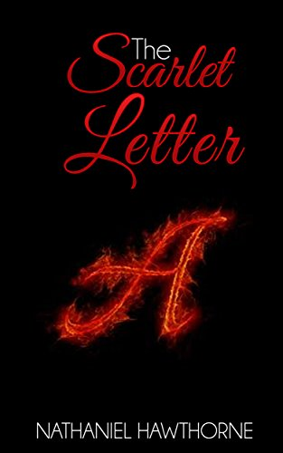

1.Wuthering heights

“ He’s more myself than I am . Whatever our souls are made of , his and mine are the same “ Wuthering heights is a 1847 novel written by Emily Bronte , one of the best gothic novels of all time and a true masterpiece. This is an epic story of love, envy , betrayal and revenge. This book tells us to what extremes a person can go to for love ( or revenge ?). This novel starts off with Mr lockwood the new tenant at Thrushcross Grange in Yorkshire, paying a visit to his landlord, Heathcliff, at his remote moorland farmhouse, Wuthering Heights. There he meets a reserved young woman ,Cathy Linton ;Joseph, a servant; and Hareton, an uneducated young man who speaks like a servant. Snowed in for the night, Lockwood reads the diary of the former inhabitant of his room, Catherine Earnshaw, and has a nightmare in which a ghostly Catherine begs to enter through the window. Woken by Lockwood's fearful yells, Heathcliff is troubled. Lockwood later returns to Thrushcross Grange in heavy snow, falls ill from the cold and becomes bedridden. While he recovers, Lockwood's housekeeper Ellen "Nelly" Dean tells him the story of the strange family. Wuthering height was first home to the Earnshaws who lived with their children, Catherine and Hindley . Healthcliff is the adopted son of Mr Earnshaw , whom he found on his trip to Liverpool. As days pass by , Hindley and Catherine were getting ignored and Heathcliff became the every favourite person of the family . But after Mr Earnshaw’s death Heathcliff gets treated as a servant and is bullied by Hindley. By this time Catherine and Heathcliff were in love but unaware of their common feelings Heathcliff under the wrong assumption of not getting loved back because of his social status leaves the house and comes back years after as a rich person just to find out that Catherine is extremely sick and she has always loved him. With time Catherine dies and Heathcliff takes revenge from everyone who kept them away and made them suffer, who did injustice to him. In this war , he hurt and destroyed lives of many innocent people, he went to the extreme ends to take the revenge. He married an innocent girl giving her hope of a good happy life and treating her like a servant when his job got done . He manipulated people nut got torment in return. By the end of the novel Heathcliff dies happily believing that he can now be with Catherine , with his obsession , passion , loneliness and suffering he dies happily. This novel highlights the chaos and complications or we can say the very truth of one’s life. In its lack of morality of the characters this masterpiece shows to what extreme people can go for love even when they know they’ll get torment in return. Contrary to many beliefs , to me “wuthering heights “ is an enjoyable read.
2. The scarlet letter
The Scarlet Letter is a historical fiction by Nathaniel Hawthrone published in 1850.The novel apprises a story of a woman called Hester Pryne and her illegitimate child Pearl. For the society she is a married woman waiting for her husband who is believed to be lost at the sea. Meanwhile she falls in love with Arthur Dimmesdale , a young charismatic man. She gets pregnant with his child and the society punishes her for her decisions by forcing her to stand before the town in shame for 3 hours as a punishment and wear the red “A,” or, “scarlet letter” for the rest of her life but she still doesn’t give the name of Pearl’s father also she is a committed mother to Pearl and lives life on her own terms, undeterred by societal perceptions of her, except in matters concerning Pearl. No one knew that Arthur is the father of Pearl and this fact is kept as a secret until the very end of the book. While Hester stands on the scaffolds, she looks out across the crowd and notices a man and suddenly realizes that it is her husband Roger Chillingworth, who at this point she believed to be dead. Chillingworth is taken to the place where Hester stays isolated , banished from the society , he tries to press out the name of the father but Hester doesn’t give out the name. They part ways after mutual understanding that the fact Chillingworth is her husband should be kept a secret. Hester takes on the backlashes of the society, she suffers the discrimination alone while her lover lives a normal life. As time flies Pearl grows up to become a wilful, impish child but abandoned by the people of the town. Hester and pearl stays with the support of Arthur Dimmesdale . But her husband Chillingworth investigates to find out Pearl’s father’s identity . He suspects and later confirms his suspect that the father is Dimmesdale. Dimmesdale gets sick but decides with Hester to flee to Europe and have a new life there but later Hester gets to know that Chillingworth knows about this plan and books the same ship ticket. But right before the day of sailing ship , when Dimmesdale was leaving the church after his sermon he sees Hester and Pearl standing before the town scaffold and he impulsively mounts the scaffold with his lover and his daughter, and confesses publicly, exposing a scarlet letter seared into the flesh of his chest. He falls dead, as Pearl kisses him. With frustration of not getting revenge Chillingworth died the next year where Pearl and Hester leaves Boston . Years later Hester comes back to her cottage and receives occasional letters from Pearl who is married to a rich european gentlemen. When she dies her was buried right next to Dimmesdale , The two share a single tombstone, which bears a scarlet “A.” “...the same dark question often rose into her mind with reference to the whole race of womanhood. Was existence worth accepting even to the happiest among them? As concerned her own individual existence, she had long ago decided in the negative, and dismissed the point as settled. A tendency to speculation, though it may keep woman quiet, as it does man, yet makes her sad. She discerns, it may be, such a hopeless task before her. As a first step, the whole system of society is to be torn down and built up anew. Then the very nature of the opposite sex, or its long heriditary habit, which has become like nature, is to be essentially modified before woman can be allowed to assume what seems a fair and suitable position...” This reflects Hester’s thoughts , understanding as well as the situation she faces and the injustice that women face just because of some choices and decisions they make for their ownselves .
3. Normal people
Normal people by Sally Rooney is considered a modern classic published in 2018. The story shows us a very complicated friendship and relationship between two teenagers, Connell and Marianne, who both attend the same secondary school in Ireland . At school , Connell is a popular, handsome, and highly intelligent secondary school student who begins a relationship with the unpopular, intimidating yet equally intelligent Marianne, whose mother employs Connell's mother as a cleaner. Connell keeps their affair a secret from school friends and Marianne agrees with because it didn’t matter to her or she thought she deserved it or both. By the time school ends they both split apart without any verbal communication but ends up attending Trinity together . Marianne grows in a different way at university, becoming pretty and popular, while Connell struggles for the first time in his life to fit in properly with his peers . The pair weave in and out of each other's lives across their university years, developing an intense bond that brings to light the traumas and insecurities that make them both who they are. Marianne goes through a lot of toxic relationships and gets ill treated because she thinks she deserves it on the other hand Connell who knows he is not very good with emotions realizes that his relationship with Helen is not working. They both find each other every time and yet end up parting ways again. This novel portrays a very complicated love story of never ending trauma yet comfort. But they both know they belong to each other after every thing .